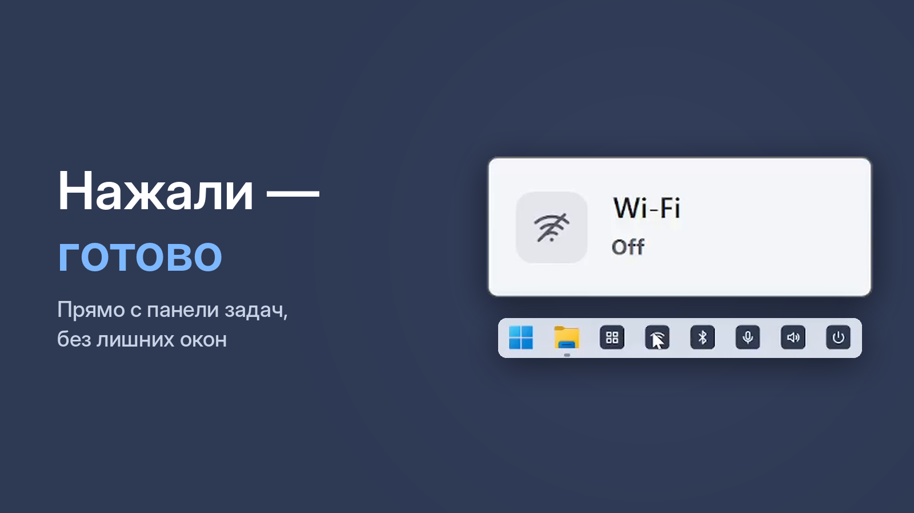

Как отключить Wi-Fi на ноутбуке или компьютере одной кнопкой — Windows 10 и 11

Выключить Wi-Fi бывает нужно, когда компьютер подключён кабелем, когда хочется, чтобы ребёнок посидел без интернета, или когда сеть «зависла» и её надо перезапустить.
Способ 1. Быстрые настройки
Нажмите Win + A (в Windows 10 откроется Центр уведомлений) и щёлкните по плитке Wi-Fi. Чтобы включить обратно — то же самое. Ещё вариант — щёлкнуть по значку сети в правом нижнем углу.
Способ 2. Параметры
Win + I → Сеть и Интернет → Wi-Fi → переключатель Wi-Fi.
Способ 3. Режим «в самолёте»
Выключает Wi-Fi вместе с Bluetooth и мобильной связью. Подходит в дороге, но если нужно выключить только Wi-Fi — это лишнее.
Способ 4. Одна кнопка на панели задач
С One Click Switcher Wi-Fi переключается одной кнопкой на панели задач. Это особенно удобно, если компьютер подключён кабелем: значок сети в углу показывает кабель, и включён ли Wi-Fi, не видно. Окно «Статус» показывает состояние Wi-Fi, Bluetooth, микрофона и звука сразу.
Бесплатно · Windows 10 и 11 · без рекламы
Быстрый перезапуск Wi-Fi
Если интернет по Wi-Fi пропал, а другие устройства работают, часто помогает выключить и включить Wi-Fi: два щелчка по одной кнопке вместо поиска в настройках.